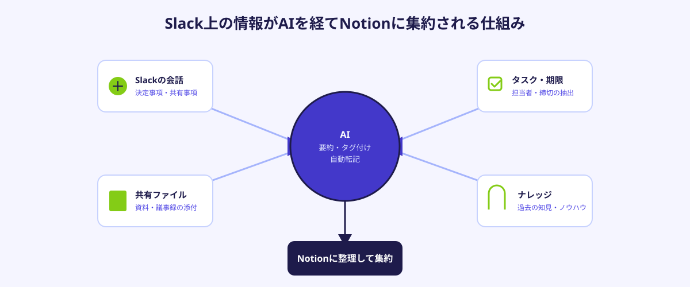
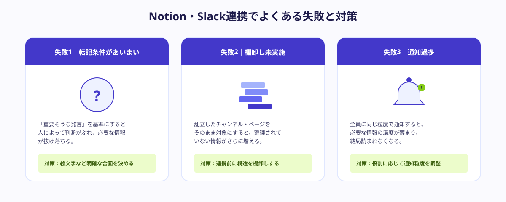

「あの資料、Notionだっけ、Slackで送られてきたんだっけ」——社内のやり取りがNotionとSlackに分かれているチームでは、こうした検索の手間が日常的に発生しています。決定事項はSlackの会話に埋もれ、まとめた資料はNotionの別ページに置かれ、結局どちらにも完全な情報がないという状態に陥りがちです。
この記事では、Notion・Slackの情報がサイロ化してしまう理由と、AIを使ってそれを解消する基本的な仕組み、導入前に整理すべきポイント、実際に情報を一元化するための5つの手順を解説します。
Notion・Slackが「情報のサイロ」になってしまう理由
NotionとSlackは、それぞれ単体では非常に便利なツールです。しかし「議論はSlack、まとめはNotion」という運用ルールが徹底されていないチームほど、情報がどちらにあるか分からなくなる傾向があります。Slackで決まったはずの内容がNotionに反映されていない、Notionのページが更新された通知がSlackに流れず誰も気づかない、といったズレが積み重なっていくためです。
さらに、チャンネル数やページ数が増えるほど、「どこを見れば最新の正解があるか」を新しく入ったメンバーが理解するまでに時間がかかるようになります。属人化したベテランメンバーへの質問が増え、結果として情報を探す時間そのものがチームの生産性を下げる要因になっています。
AIでNotion・Slackを連携させる基本的な仕組み
AIを使った連携の基本的な考え方は、Slack上で発生した会話やファイルの中から「残すべき情報」をAIに判定させ、要約・タグ付けした状態でNotionに自動的に転記するという流れです。すべての発言をそのまま転記するのではなく、決定事項・仕様変更・重要な共有事項など、後から見返す価値がある内容だけを抜き出す点がポイントになります。

逆方向の連携も同様に重要です。Notionのページが更新された際に、関係するSlackチャンネルへ要点だけを自動で通知する仕組みを作ることで、「更新したのに誰も気づかない」という事態を防げます。AIに「何を・誰に・どの粒度で知らせるか」を判断させることで、通知過多にもならず、必要な情報だけが必要な人に届く状態をつくれます。
導入前に整理すべき3つのポイント
連携ツールを選ぶ前に、次の3点を整理しておくことで、導入後の「結局運用が定着しない」という失敗を防げます。
①どの情報をどこに集約するか方針を決める
「議論はSlack」「正式な記録・ナレッジはNotion」といった役割分担の方針を先に決めておくことが大前提です。方針が曖昧なままAI連携だけを導入すると、AIがどの情報を転記すべきか判断する基準もぶれてしまいます。
②既存のNotion構造・Slackチャンネル運用を棚卸しする
すでに乱立しているNotionページやSlackチャンネルをそのままAI連携の対象にすると、整理されていない情報がさらに増えるだけになります。転記先となるNotionのデータベース構造や、対象とするSlackチャンネルを先に棚卸しして整理しておく必要があります。
③検索・通知のルールを先に決めておく
「誰が・どのタイミングで・どの粒度の通知を受け取るか」を決めずに自動化すると、通知が多すぎて結局見られなくなることがあります。部署・役職ごとに必要な情報の粒度を整理しておくことで、AIに渡す通知ルールの設計がスムーズになります。
この3点が固まっていれば、どの範囲をAIに任せ、どの範囲を人が判断するかの線引きが明確になり、導入後の手戻りを大きく減らせます。
情報を一元化する5ステップ
実際にNotion・Slackの情報をAIで一元化する場合、次の5ステップで進めるのが基本的な流れです。
STEP1｜情報の集約先（Notion）を整理する
まず、最終的な情報の集約先となるNotionのデータベース構造を整理します。「議事録」「決定事項」「ナレッジ」など、転記先のカテゴリをあらかじめ用意しておくことで、AIが転記する際の振り分けがスムーズになります。
STEP2｜Slack上の会話をNotionへ自動連携する
特定のチャンネル・特定の絵文字リアクションが付いた発言など、転記対象とする条件を決めた上で、SlackとNotionを自動連携する仕組みを構築します。すべての発言を転記すると情報が埋もれるため、「これは残す」という人の判断（合図）を起点にする運用が定着しやすい方法です。
STEP3｜AIに要約・タグ付けをさせる
転記された会話をAIに要約させ、案件名・担当者・カテゴリなどのタグを自動で付与させます。タグ付けまで自動化しておくことで、後から検索したときに「キーワードが完全一致しなくても、関連する情報が見つかる」状態を作れます。
STEP4｜検索・通知をAIで効率化する
社内向けのAIチャット窓口を用意し、「〇〇の決定事項を教えて」と聞けばNotionに集約された情報から該当箇所を要約して回答する仕組みを整えます。あわせて、重要な更新だけを関係者のSlackに自動通知することで、探す手間と気づけない手間の両方を減らせます。
STEP5｜運用ルールを固定して定着させる
最後に、「転記の合図にする絵文字」「カテゴリの命名規則」「通知を受け取る範囲」などのルールをドキュメント化し、チーム全体に共有します。ルールが固定されていないと、運用する人によって扱いがバラバラになり、徐々に使われなくなるため、このステップを省略しないことが重要です。
導入後によくある失敗と対策
Notion・Slack連携のAI活用自体は技術的に難しくありませんが、運用が定着しない企業にはいくつか共通点があります。

- 転記対象の条件があいまいなまま始める：「重要そうな発言」を基準にすると人によって判断がぶれ、必要な情報が転記されずに抜け落ちてしまう
- 既存の乱雑なチャンネル・ページ構成をそのまま対象にする：棚卸しをせずに連携範囲を広げ、整理されていない情報がさらに増えてしまう
- 通知の粒度を調整しないまま全員に流す：誰にとっても必要な情報の濃度が薄まり、結局通知を読まなくなってしまう
💡 運用を止めないコツ
「全部AIに判断させる」のではなく、「残す合図を出す」のは人、「整理・要約・転記」はAIという役割分担を最初に決めておくことが、Notion・Slack連携を定着させる最大のポイントです。
自社運用・既存連携機能・AI導入代行、どちらが向いているか
Notion・Slackの情報を一元化する方法は、大きく3つに分かれます。NotionとSlackそれぞれに用意された標準連携機能をそのまま使う方法、汎用の連携サービス（iPaaS）を契約して設定する方法、そして自社の運用ルールに合わせた転記・要約・通知のロジックだけをスポットでAI導入代行に依頼する方法です。
標準の連携機能は導入の早さが魅力ですが、転記する条件やタグの付け方を細かく制御することは難しく、結局すべて転記されて情報が埋もれてしまうことがあります。汎用の連携サービスは柔軟性が高い一方、要約やタグ付けのロジックを自社向けに調整するには一定の設定スキルが必要です。
そのため、「自社の運用ルールに合わせた転記条件の設計」や「要約・タグ付け・通知のロジック構築」だけをスポットで依頼するという選択肢が現実的です。たとえば特定の絵文字リアクションを合図にした自動転記ツールや、部署ごとに通知の粒度を変える仕組みなどを切り出して依頼することで、固定費をかけずに自社の運用に合った形でAI連携を導入できます。
🔧 「自社の運用に合わせて作ってほしい」企業様へ
ANKENでは、Notion・Slack連携のAI自動化ロジック構築や、社内向けAI検索窓口の構築など、業務の一部だけを切り出してスポットで依頼することも可能です。固定費ゼロ・週末対応のエンジニアとマッチングできます。
まとめ・ANKENへのご相談
Notion・Slackの情報分散をAIで解消するには、「どの情報をどこに集約するか」という方針を先に決め、既存の運用を棚卸しした上で、転記・要約・タグ付け・通知をAIに任せる範囲を明確にすることが欠かせません。標準連携機能・汎用の連携サービス・AI導入代行のどれが向いているかは、自社の運用ルールにどこまで合わせる必要があるかによって変わります。
ANKENでは、Notion・Slack連携のAI自動化ロジック構築から、社内情報の一元化全体の設計まで、固定費ゼロ・週末スポットからのご相談に対応しています。
Notion・Slack連携の自動化ロジックから、社内向けAI検索窓口の構築まで、固定費ゼロ・週末スポットから依頼可能です。
👉 無料でスポット依頼を相談する初回相談は無料です。要件が固まっていなくてもOKです。